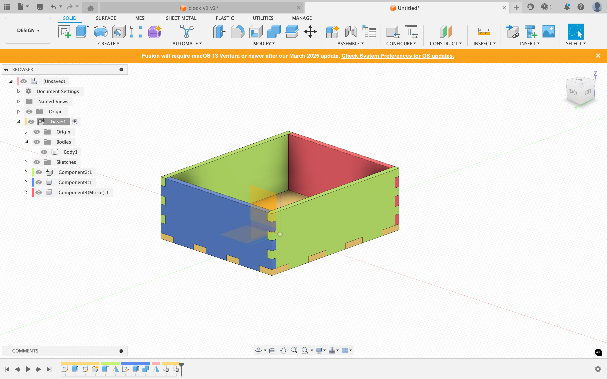
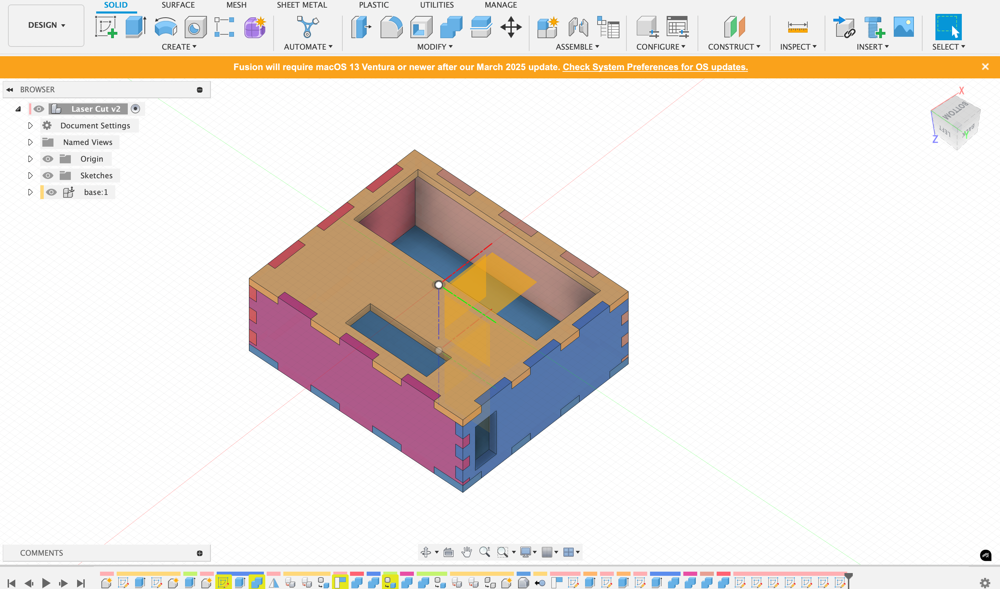
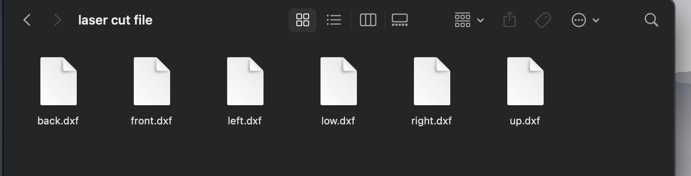
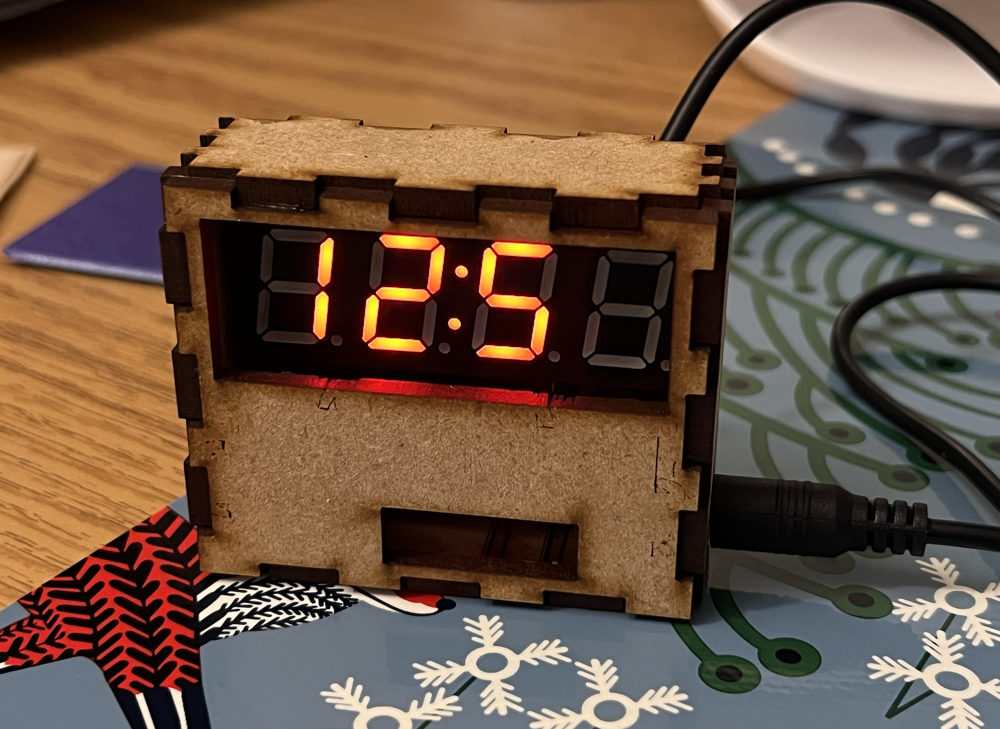

Process:
1. Learning from this vedio, https://www.youtube.com/watch?v=ZrcqauNvt0M, Using the documented measurements to create a finger-joint box in Fusion.

2. Created holes on the box to allow all the functions.

3. Saved each surface's sketch as dxf file.

4. Imported the files into the laser cutter computer.
5. Finished the laser cut.

Reflection:
This was my first time designing and using the laser cutting method.
Compared to 3D design and printing, I found it less engaging. The 2D design reduced flexibility, although laser cutting is much more precise than 3D printing. Given this precision, I may explore more designs that require accuracy with laser cutting in the future.
One issue with my laser-cut design is that users might find it challenging to touch the buttons. I could have designed two buttons, similar to what I did with the 3D-printed enclosure, but due to time constraints, I couldn’t incorporate that feature. Moving forward, I’ll definitely enhance my design.